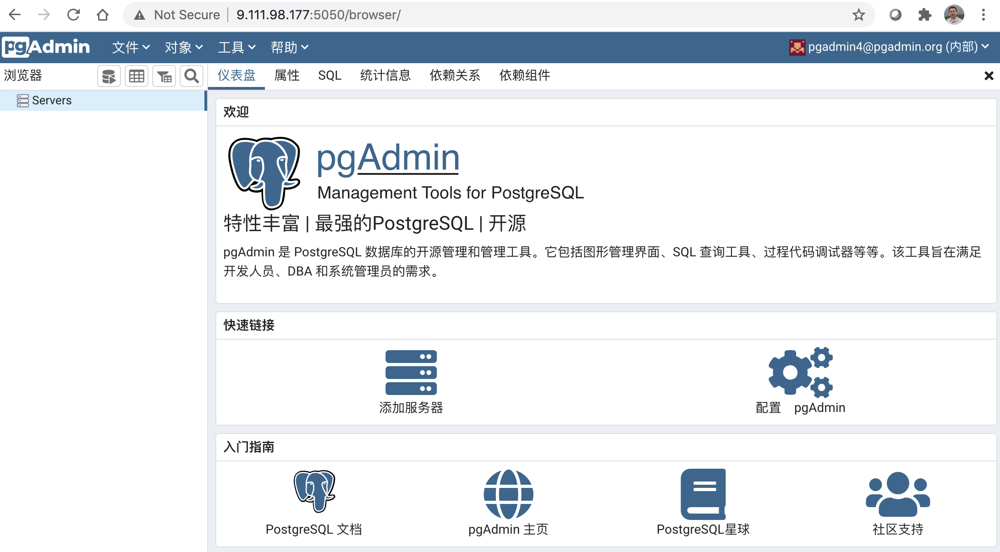

2. Confluence¶
Atlassian Confluence（简称Confluence）是一个专业的wiki程序。 它是一个知识管理的工具，通过它可以实现团队成员之间的协作和知识共享。 Confluence不是一个开源软件，非商业用途可以免费使用。目前，Confluence被用于广泛地用于项目团队，开发团队，市场销售团队。
本章讲解如何使用Docker安装Confluence。
2.1. 准备docker-compose.yml文件¶
下载confluence目录文件，URL：https://github.ibm.com/fsd-training/devops/tree/master/confluence
查阅confluence目录下文件：
docker-compose.yml # docker-compose命令使用的文件
start.sh # Linux 用户使用的 Shell 脚本，仅供Windows用户参考
2.2. 启动 Confluence¶
命令行进入confluence目录下，执行start.sh脚本。容器服务启动后，访问页面地址：http://localhost:8090，如图所示：
{kind=link}
按照页面提示，可以选择语言，然后点击下一步，进入安装界面。
{kind=link}
选择“产品安装”，进入获得授权码（License）界面。记住下图中的服务器ID，稍后会用到。
{kind=link}
你可以选择“获取试用授权”，下面介绍如何获取免费的授权码。
2.3. 获得授权码¶
获得授权码的思路就是替换授权码的原始Jar包，使Confluence安装过程顺利进行。
2.3.1. 获得授权码的原始Jar包¶
命令行进入Docker容器，拷贝文件到本地。
$ docker exec -it confluence sh
$ cd /opt/atlassian/confluence/confluence/WEB-INF/lib/
$ ls atlassian-extras-decoder* # 确认文件名及路径
atlassian-extras-decoder-api-3.4.1.jar atlassian-extras-decoder-v2-3.4.1.jar
$ docker cp confluence:/opt/atlassian/confluence/confluence/WEB-INF/lib/atlassian-extras-decoder-v2-3.4.1.jar ./atlassian-extras-2.4.jar
2.3.2. 制作新的授权码Jar包¶
keygen.sh文件位于github仓库中。
$ sh keygen.sh
按照界面提示，填写对应内容。
{kind=link}
点击“patch”按钮，选择atlassian-extras-2.4.jar，点击“Open”按钮。 一切就绪后，点击“gen”按钮生成授权码（License）秘钥，点击自动复制密钥，保存，稍后要用到。
生成授权码的同时，还重新生成了新的atlassian-extras-2.4.jar，原来的文件备份为atlassian-extras-2.4.bak。
2.3.3. 替换容器内原始授权码的Jar包¶
$ docker cp ./atlassian-extras-2.4.jar confluence:/opt/atlassian/confluence/confluence/WEB-INF/lib/atlassian-extras-decoder-v2-3.4.1.jar
重启服务：
$ docker-compose restart
刷新页面，复制上个步骤生存的授权码（License）秘钥，粘贴到 Confluence 安装界面里。等待验证通过，点击“下一步”按钮，进入配置数据库界面。
{kind=link}
接下来，我们配置数据库。
在安装界面选择“我自己的数据库”，点击“下一步”按钮。
填写数据库信息，注意数据库密码为：mypostgres
{kind=link}
点击“下一步”按钮，等待Confluence设置数据库。
{kind=link}
{kind=link}
{kind=link}
{kind=link}
{kind=link}
2.5. 熟悉数据库操作（可选）¶
下面介绍PostgreSQL 数据库的知识。
2.5.1. 访问pgAdmin¶
pgAdmin 是 PostgreSQL 数据库的开源管理和管理工具。它包括图形管理界面、SQL 查询工具、过程代码调试器等等。该工具旨在满足开发人员、DBA 和系统管理员的需求。
启动容器后，访问URL：http://localhost5050，进入pgAdmin管理界面。
{kind=link}
创建服务：
{kind=link}
访问数据库：
{kind=link}
2.5.2. 命令访问PostgreSQL¶
用户可以使用命令行进入pgsql容器，对数据库进行操作：
$ docker exec -it confluence-db sh # 进入pgsql容器
# psql -U postgres # 用户名 postgres 登入
psql (9.4.26)
Type "help" for help.
postgres=# \l # 查询用户
List of databases
Name | Owner | Encoding | Collate | Ctype | Access privileges
-----------+----------+----------+------------+------------+-----------------------
postgres | postgres | UTF8 | en_US.utf8 | en_US.utf8 |
template0 | postgres | UTF8 | en_US.utf8 | en_US.utf8 | =c/postgres +
| | | | | postgres=CTc/postgres
template1 | postgres | UTF8 | en_US.utf8 | en_US.utf8 | =c/postgres +
| | | | | postgres=CTc/postgres
(3 rows)
postgres=# CREATE DATABASE confluence WITH OWNER postgres; # 创建数据库
CREATE DATABASE
postgres=# \q # 退出数据库
快捷键（Ctrl + D）退出容器控制台。
2.6. 问题¶
访问页面地址：http://localhost:8090时，如果出现如图所示错误：
{kind=link}
按照错误的提示，是映射文件权限问题，Linux用户仅需要简单的执行命令：
chmod -R 777 .
然后，重启服务，最后刷新页面，错误消失。